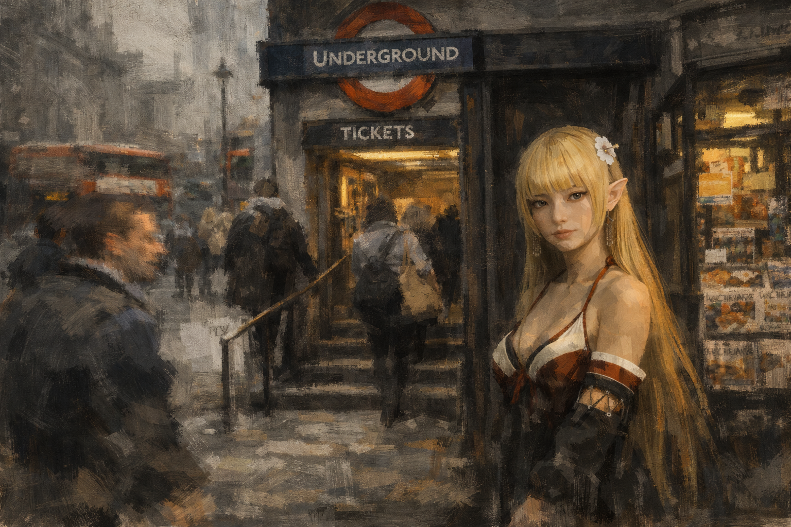
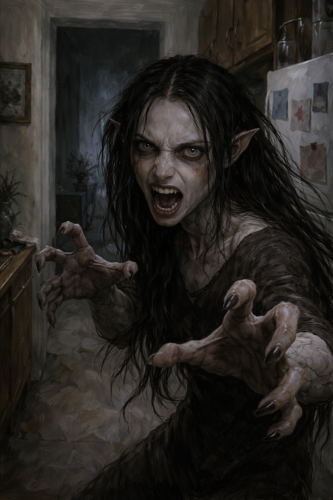
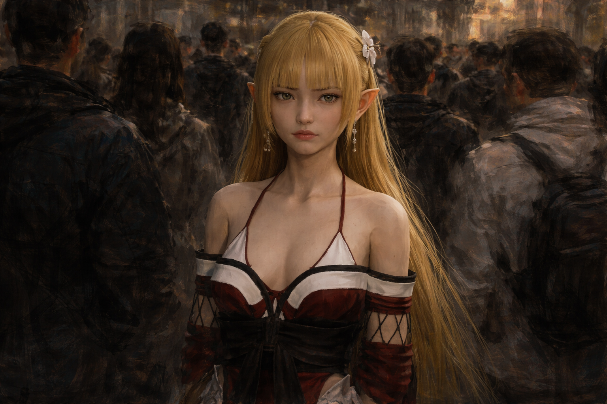
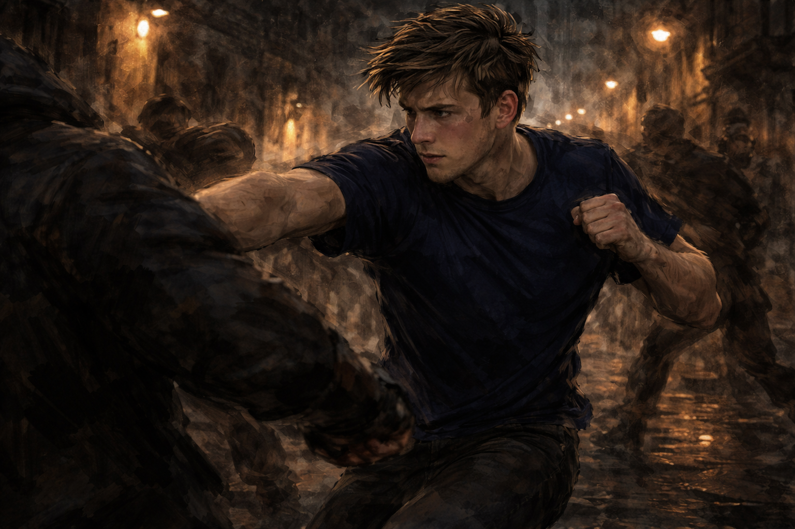
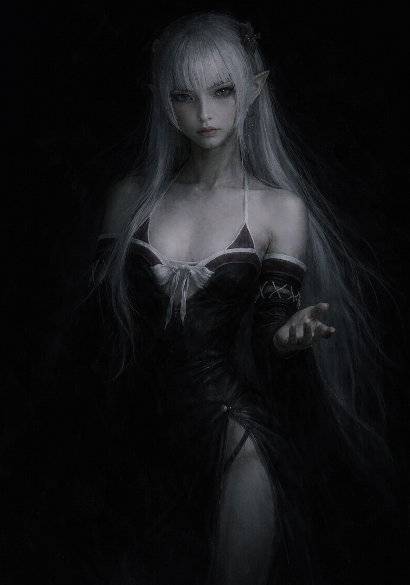

An Original Mythology • London • In Development
“They feed on what you feel. She felt something she did not expect.”
A burnt out young Londoner becomes the target of a secret organisation when an ancient entity chooses him as the human she feeds from and decides he is worth protecting.
Explore the ProjectThe Concept
Vessel is a contemporary urban thriller set in London, built on an original mythology of immortal entities that have existed alongside humanity since the dawn of civilisation. These beings feed on human emotion, drawing sustenance from every feeling a person experiences across a lifetime, and have done so since the dawn of time.
Most humans never know they exist. Some are chosen.
What makes Vessel distinct is its moral architecture. There are no good supernatural beings and no evil ones. The ancient being who chose the protagonist is not a guardian angel. She feeds from him, regulates his emotions without his knowledge, and cares about his survival mainly because his death would undo everything she has built. When she begins to feel something beyond self interest, it becomes the emotional engine of the story.
Genre: Supernatural Thriller • Dark Fantasy • Action
Setting: Contemporary London
Production: Canary Islands, Spain
Comparable Titles
The Mythology
Since before the first civilisations, an ancient species has existed alongside humanity. Immortal, invisible to ordinary perception, and sustained entirely by human emotion. They are not gods in the conventional sense. They do not answer prayers or grant wishes.
The Vision
Vessel is designed as the foundation of an expanding world rather than a single contained story. The mythology is deep enough to sustain years of storytelling. The characters are specific enough to carry an audience across multiple formats.
Visual Identity


Vessel is grounded before it is supernatural. The visual language of the first act is deliberately ordinary. Fluorescent office lighting. Grey morning commutes. A flat that is functional rather than lived in. The mundanity is intentional. It is the baseline against which everything that follows lands harder.
As the bond deepens the visual world shifts without announcing itself. London does not become fantastical. It becomes layered. The same streets carry a different weight. The same faces hide different things. The supernatural does not replace the ordinary. It exists beneath it.
Noel's avatar is precise and timeless, almost elvish, a presence that does not belong to any particular era. When she manifests publicly the camera treats her the way it treats something genuinely ancient in a modern space. Slightly wrong in the best possible way. Too still. Too aware. Her true form is not shown directly. It is felt. Sound design and peripheral suggestion rather than spectacle.
The Stray sequences are where the film earns its horror credentials. A Stray's avatar is unstable and corrupted. Darkened veins. Grayed skin. Proportions that slip when it is hungry. Shot tightly and practically, close to the ground, the horror coming from wrongness rather than scale.
The action is grounded and consequential. Daniel is not a superhero in the conventional sense, though some of what he can do would be difficult to describe any other way. The capabilities the bond gives him come entirely from Noel, granted at her discretion and shaped by what she is.
Dark without being nihilistic. Supernatural without being fantastical. Emotionally driven without sacrificing momentum.



The People
Development Status